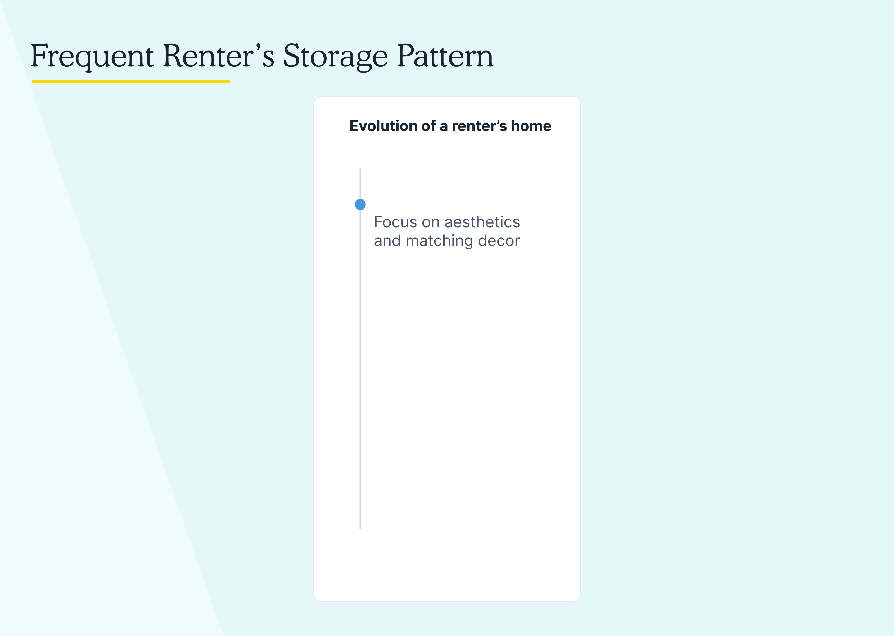
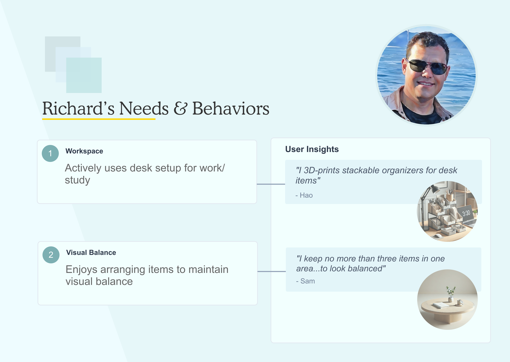
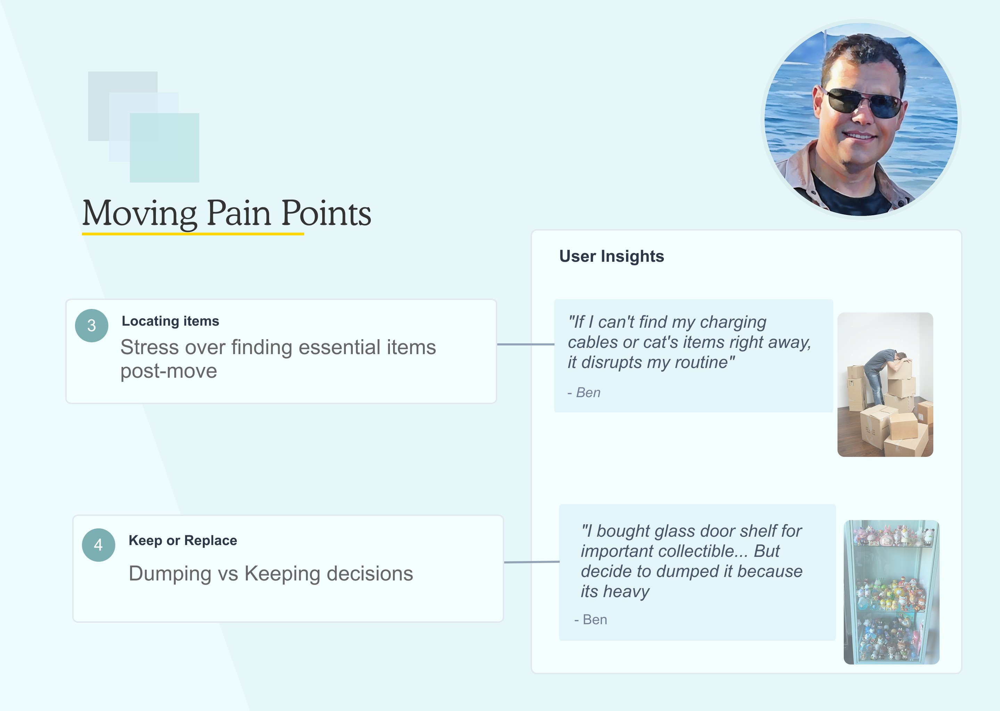
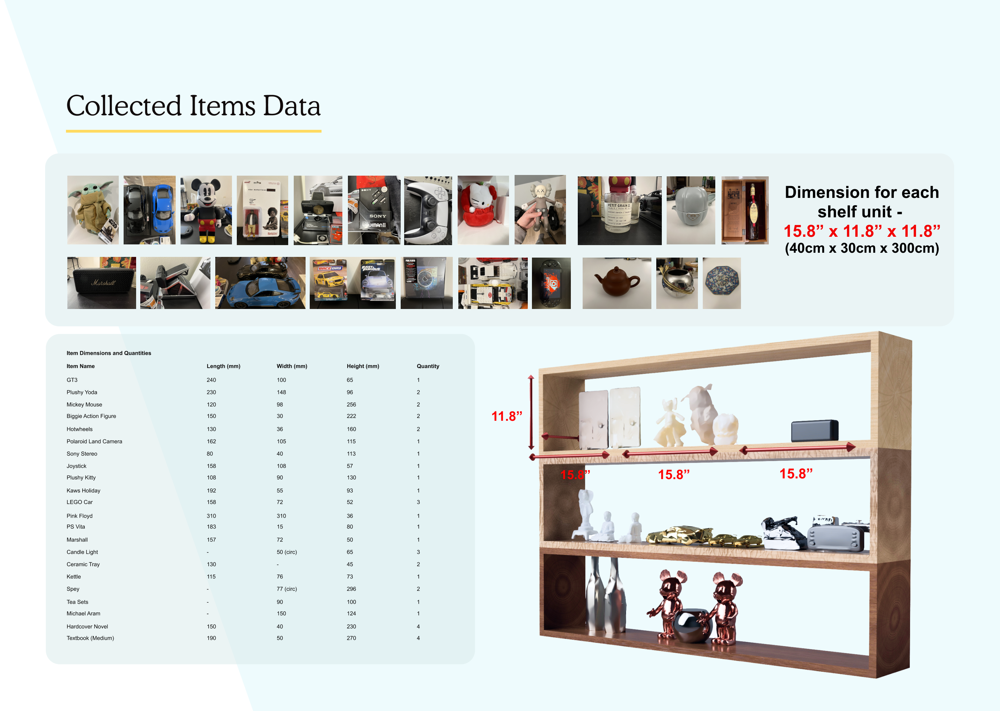
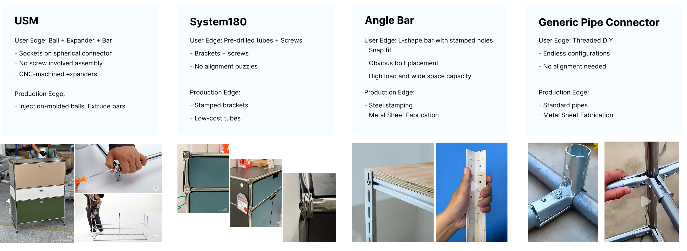
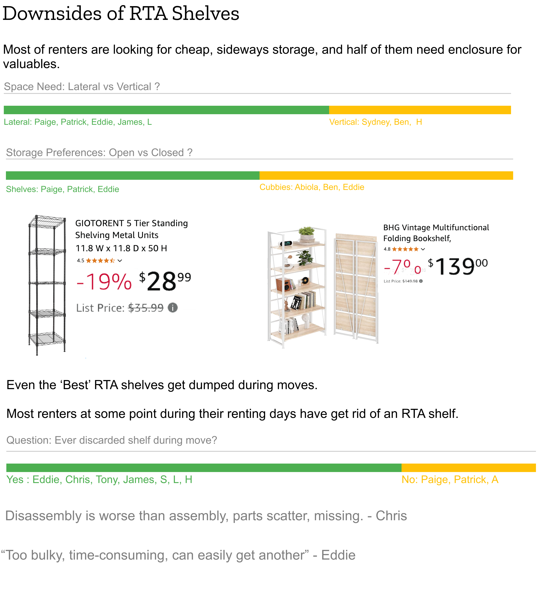
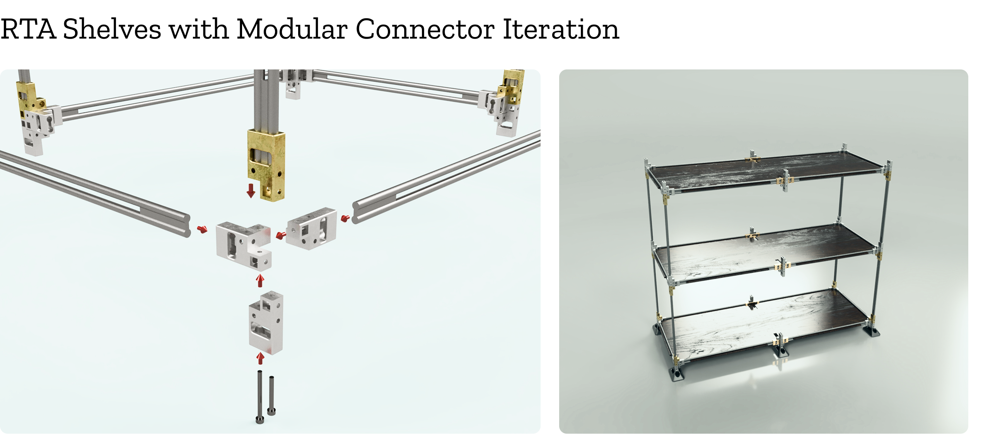
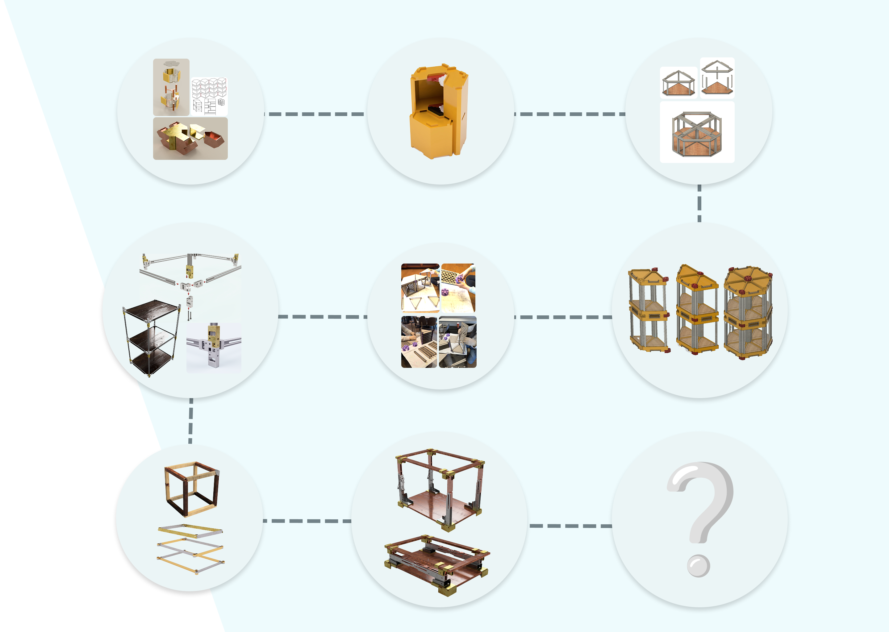
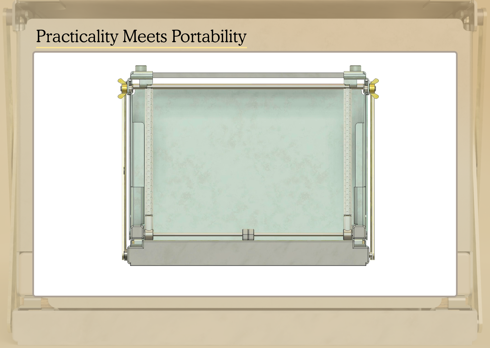
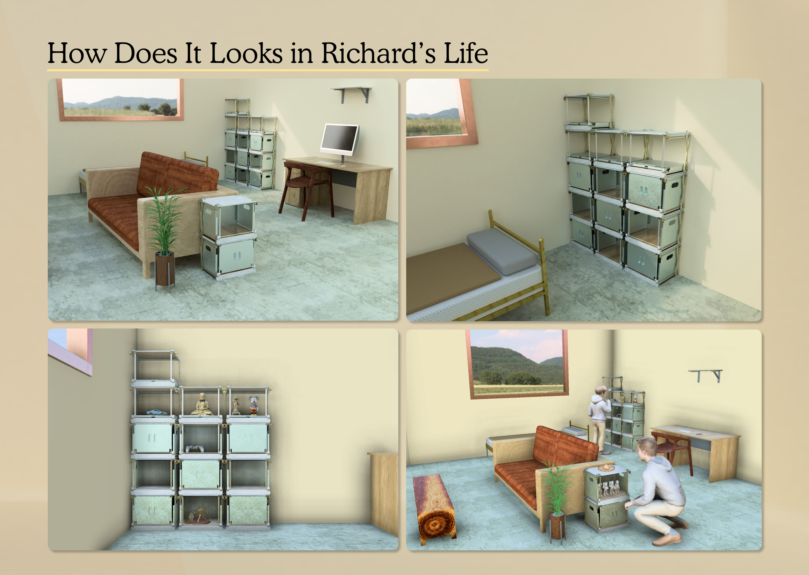

This project addresses an apparent yet universal problem — the struggle of creating adaptable living spaces for frequent movers. From research through findings to a working solution, it traces the full arc of designing modular storage that is sturdy, adaptable, affordable, and still looks great.
Whether it's for school, work, or life changes, most of us have faced the challenge of fitting furniture and storage into different living spaces. It's about the constant struggle between what looks good and what's practical. More people in cities want modular furniture, but current options aren't cutting it — they're either flimsy, too pricey to customise, bulky, or overly complicated.
We see an opportunity for furniture units that are sturdy, adaptable, affordable — while still looking great. The goal is to simplify moving and help renters create spaces that feel like home.

Interview research revealed that renters' storage habits evolve in phases. When first moving in, aesthetics matter most. As belongings grow, they add temporary solutions. Space optimisation leads to bulkier shelves. When moving again, they face keep-or-discard decisions. This highlights a gap: occasional-use items like books, collectibles, or porcelain need secure, organised display — especially during moves.
Imagine these items staying in their exact units while moving. No aimless searching through boxes, no rebuilding systems. Everything stays intact.

Richard is a 28-year-old software engineer who's made minimalism his way of life — but not by choice. Living in a one-bedroom apartment with his cat, he works from home three days a week, so his space needs to be both living area and workspace. He 3D-prints his own organisers and loves finding clever storage solutions that look good.
His apartment has awkward corners where wider shelves don't fit. He wants to display porcelain and figurine collectibles and keep them safe from his cat. Moving yearly for work is a headache — fragile collectibles broke during his last move, and he wasted hours digging for cat supplies or chargers. His old IKEA shelves are falling apart from constant rebuilding, and he ditched a glass-door unit because it was too heavy to move.


Core Needs
Modular, stackable designs that adapt to awkward spaces. Style without compromising practicality. A multi-functional system that serves as secure display and moving bin.
The solution must be mover-friendly with minimal assembly effort, offer scalable modularity, serve as both display and transportable unit, maintain aesthetic appeal, and keep costs market-viable.
To ensure the shelf works for real-world needs, common items renters store — books, collectibles, electronics — were measured. This data drove the base shelf size: 15.8" × 11.8" × 11.8" (40cm × 30cm × 30cm), accommodating 90% of items listed while fitting tight spaces like studio apartments.

The market for RTA shelves is saturated. The winning products are usually the simplest and cheapest — using standardised components like ball joints, uniform bars, and pre-drilled holes. No thinking required. Renters prioritise shelves priced between $30–$100 that offer either open display or enclosed storage.
While they'll tolerate assembly if it's affordable and sturdy, these shelves often get discarded during moves. Disassembling them is tedious, and renters see them as temporary. Surveys confirmed: users prioritise effortless over reusability, and most rarely use shelves as moving bins.


Early prototypes experimented with polygonal shapes and intricate connectors to create modular shelves. User testing responses were generally negative — difficult to adapt, store, or fit into corners. Renters aren't looking for niche furniture; they look for simple, standard form over experiments.
The next stage used a rectangular shelf with uniform tenon connectors for modular assembly. Users liked the minimal look but hated the assembly process.

"It's like solving a puzzle just to hold the books."
— Leo
"Aligning these parts can be frustrating."
— Geo
Assembly complexity bothers renters too. They need simplicity in both form and usage. It all comes down to stripping the connecting system to its most intuitive form. These insights pushed the next iteration toward something simpler: assembly-free, easy to fold and pack, compact enough to fit into regular moving boxes, with optional display mode — encouraging users to keep them during moves.
The full evolution from early RTA concepts through polygon experiments, modular connector shelves, and ultimately to the foldable solution — each stage informed by user feedback and production constraints.

In his apartment, Richard stacks the shelves and uses lower units to store porcelain ware in enclosed compartments — keeping them safe from his cat. He uses open display on upper levels for collectibles like sculptures and electronics, arranged for visual balance.
When moving, Richard packs most shelves into a moving box within minutes and converts a couple into secure bins for charging cables and cat supplies. These bins let him find essentials instantly in his new place — no more stressful digging through boxes.



The next phase focuses on streamlining sheet metal fabrication to reduce costs without sacrificing durability — trimming excess design elements and sourcing manufacturers. Beyond apartments, the project is exploring markets like luxury RV camping, where users need portable, adaptable storage that survives constant motion.